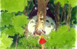

宫崎骏简介
Magna 宫崎骏（Miyazaki Hayao，1941年1月5日－），日本著名动画导演、动画师及漫画家，出生于东京都文京区[1]。1963年进入东映动画公司，1985年与高畑勋共同创立吉卜力工作室。2013年9月6日宣布引退。宫崎骏动画作品大多涉及人类与自然之间的关系、和平主义及女权运动，出品的动漫电影以精湛的技术、动人的故事和温暖的风格在世界动漫界独树一帜。
更多>>人物评价

《龙猫》  《天空之城》
《天空之城》  《幽灵公主》
《幽灵公主》  《千与千寻》
《千与千寻》
《天空之城》 《幽灵公主》 《千与千寻》